Lambda + Terraform + Github Actions
- Create a deployment pipeline for a Lambda function with Terraform
- Use Lambda versions and aliases to define two environments for development and production
- Use the API Gateway stageVariables to target one of these 2 environments
- Use Gihub Actions to automatically update the Lambda function
- A git push on the develop branch will update the dev version of the Lambda function
- A git push on the master branch will update the prod version of the Lambda function
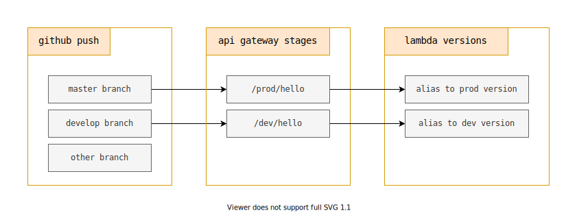
Install and setup the project
Get the code from this github repository :
# download the code
$ git clone \
--depth 1 \
https://github.com/jeromedecoster/lambda-terraform-github-actions.git \
/tmp/aws
# cd
$ cd /tmp/aws
To setup the project, run the following command :
# create env + terraform init
$ make setup
This command will :
- Create an AWS user and put the access keys in the .env file
- Initialize Terraform from the information defined in the infra directory
Creating the architecture
To create the architecture, run the following command :
# terraform plan + apply
$ make tf-apply
This command will :
- Create a Lambda function that runs a very simple code
- Create an API Gateway that will allow us to access the Lambda function
The API Gateway is created :
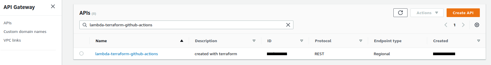
The /hello resource has a GET method that targets our Lambda :
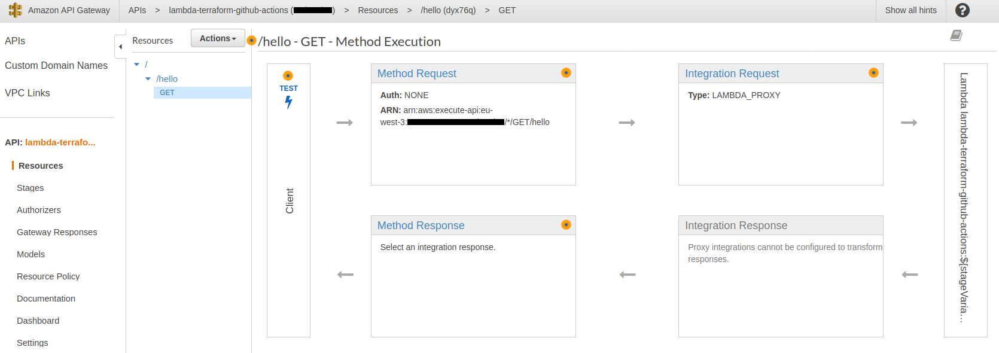
We can see in the Integration Request box that, by targeting the Lambda function, we associate a specific version defined by stageVariable :
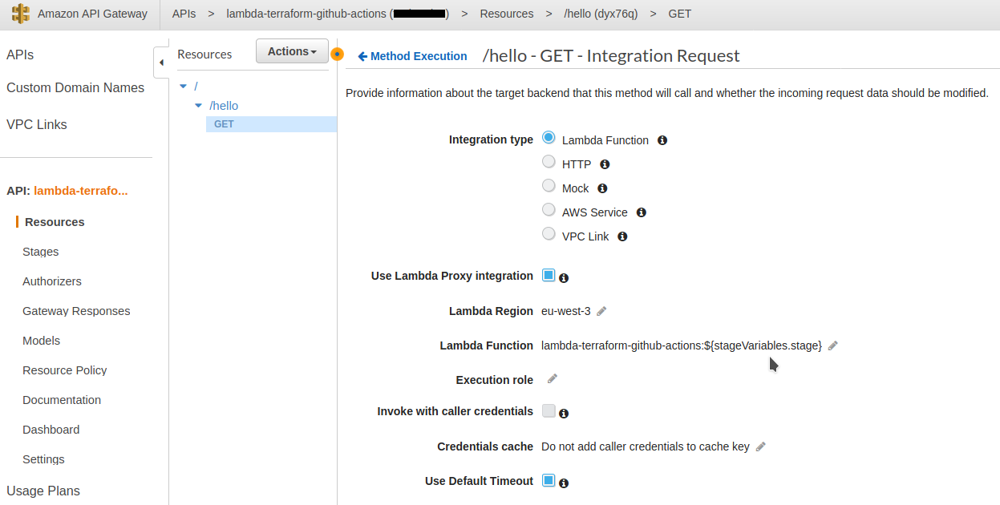
Two stages have also been published : dev and prod.
Here is the source code to deploy the stage dev :
resource "aws_api_gateway_deployment" "deployment_dev" {
depends_on = [
aws_api_gateway_integration.lambda
]
rest_api_id = aws_api_gateway_rest_api.api_gateway.id
}
resource "aws_api_gateway_stage" "dev" {
deployment_id = aws_api_gateway_deployment.deployment_dev.id
rest_api_id = aws_api_gateway_rest_api.api_gateway.id
stage_name = "dev"
variables = {
"stage" = "dev"
}
}
The stage dev has a stageVariable called stage whose value is dev :
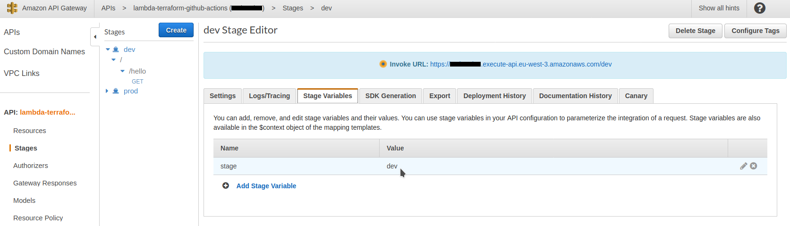
The stage prod has a stageVariable called stage whose value is prod :
Lambda function is created :
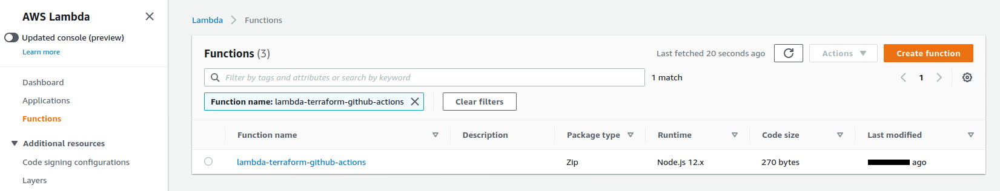
The code is simple :
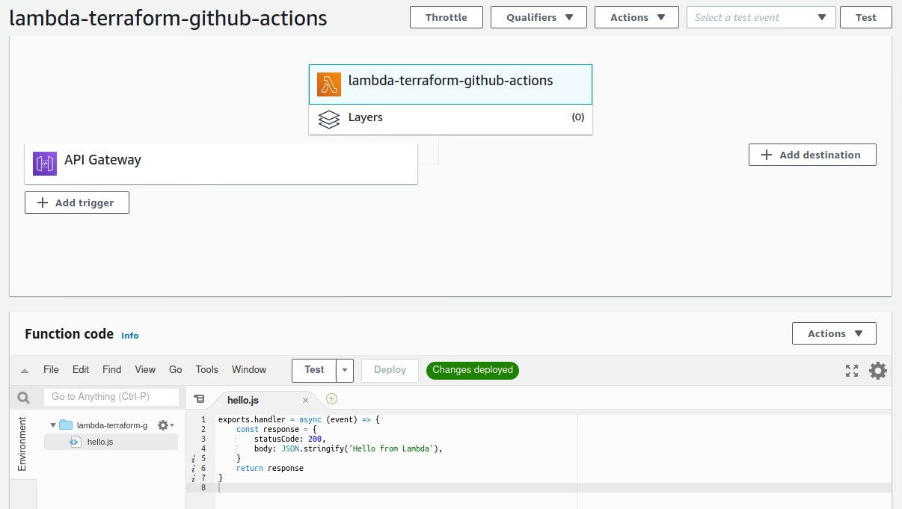
Here is the source code to create the 2 aliases :
resource "aws_lambda_alias" "alias_dev" {
name = "dev"
description = "dev"
function_name = aws_lambda_function.hello.arn
function_version = "$LATEST"
}
resource "aws_lambda_alias" "alias_prod" {
name = "prod"
description = "prod"
function_name = aws_lambda_function.hello.arn
function_version = "$LATEST"
}
We find these aliases in the web interface :
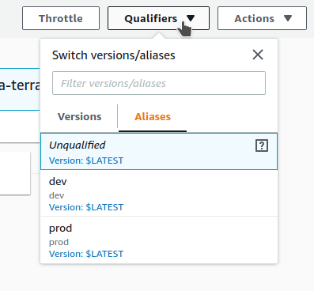
We can test access to the Lambda function by a curl call :
$ make hello-dev
"Hello from Lambda"
Setup up the Github project
The project uses Github Actions to automatically deploy updates
Lambda function automatic deployment requires AWS credentials
Here is the source code using the accesses :
- name: Configure AWS credentials
uses: aws-actions/configure-aws-credentials@v1
with:
aws-access-key-id: ${{ secrets.AWS_ACCESS_KEY_ID }}
aws-secret-access-key: ${{ secrets.AWS_SECRET_ACCESS_KEY }}
These accesses were created previously
They are located in the .env file which is based on the .env.tmpl template
We add these secrets in our project :
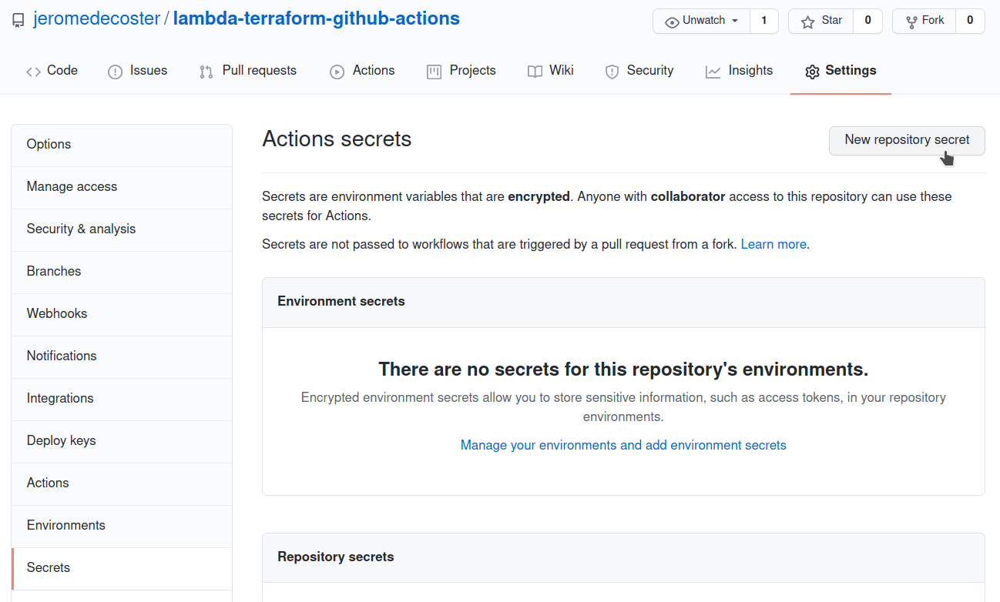
The secrets have been added :
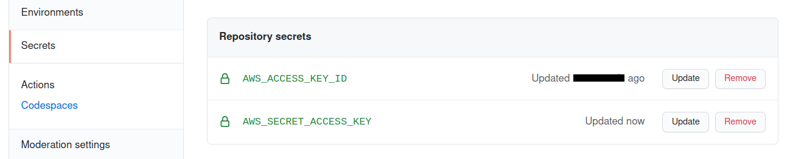
Creating the develop branch
As a reminder, the deployment of our project is done according to this principle :
-
A git push on the
developbranch will update thedevversion of the Lambda function -
A git push on the
masterbranch will update theprodversion of the Lambda function
At the moment we only have one master branch. So we create a develop branch from it :
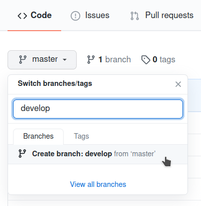
We edit the code of the Lambda function of the develop branch :
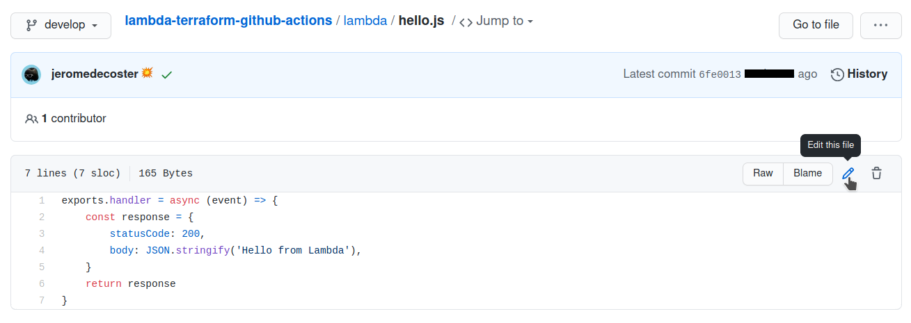
We modify the message for Hello from develop :
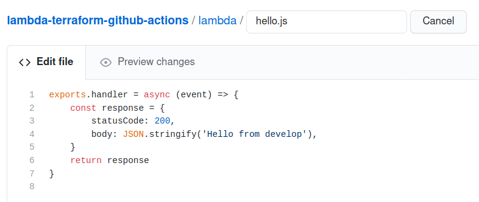
We commit directly to the develop branch :
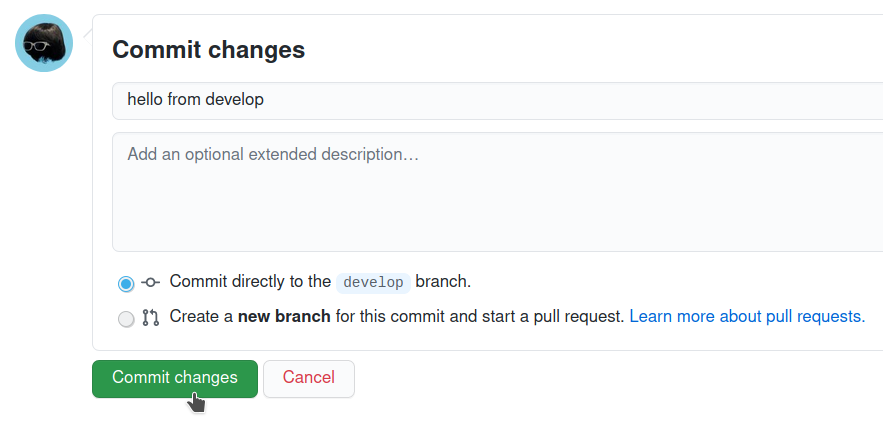
The cd.yml workflow starts :
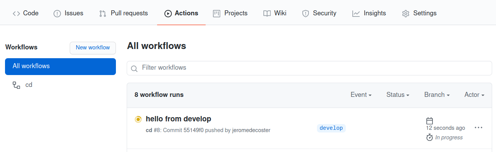
It ends quickly :
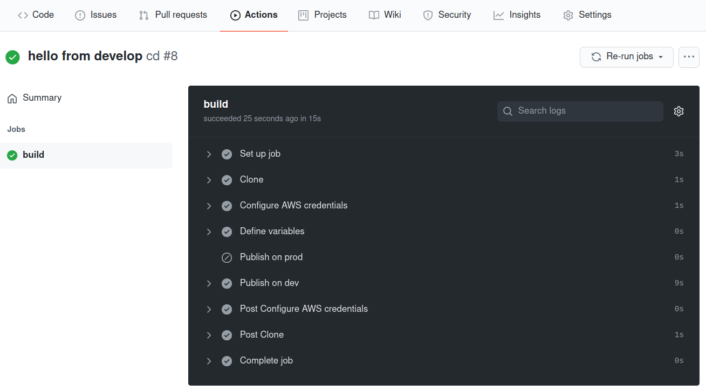
To test our deployment we run the following command :
$ make hello-dev
This command executes a simple curl call :
$ curl $(terraform output -raw hello_dev)
It get the URL from a Terraform output :
output "hello_dev" {
value = "${aws_api_gateway_stage.dev.invoke_url}/hello"
}
Our code modification, on the develop branch, returns the correct message :
# successul return !
$ make hello-dev
"Hello from develop"
Updating the master branch
We quickly edit the master branch to test the proper functioning of our continuous deployment :
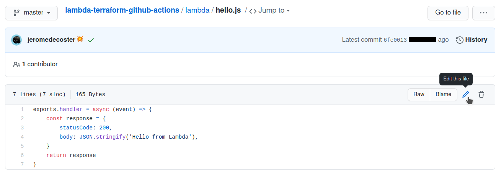
The message is now Hello from master :
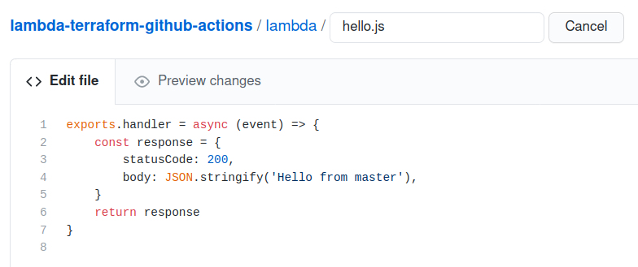
We commit in the master branch :
The cd.yml workflow starts :
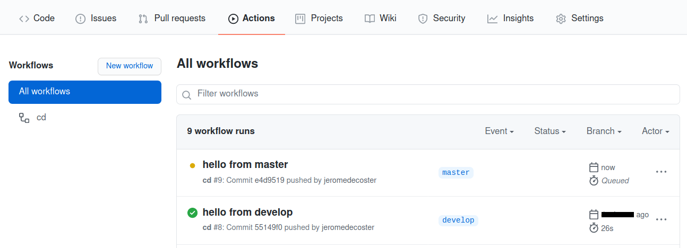
It ends quickly. To test our deployment we run the following command :
$ make hello-prod
"Hello from master"
In the Lambda web interface, we can see that aliases now point to the published versions of a Lambda function and no longer to the $LATEST version :
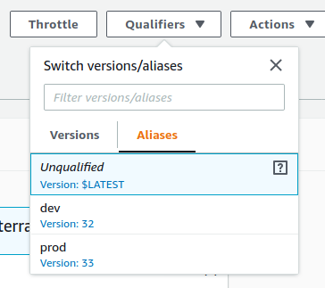
The prod and dev versions have an alias label :
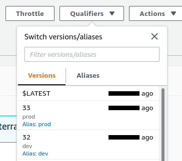
This publication and alias association is performed by this part of the publish.sh script :
VERSION=$(aws lambda publish-version \
--function-name $PROJECT_NAME \
--description $1 \
--region $AWS_REGION \
--query Version \
--output text)
aws lambda create-alias \
--function-name $PROJECT_NAME \
--name $1 \
--function-version $VERSION \
--region $AWS_REGION
Updating with the Github flow
Our project works :
-
Updating the code on the
masterbranch deploys a Lambda accessible via the URL/prod/hello -
Updating the code on the
developbranch deploys a Lambda accessible via the URL/dev/hello
We now want to simulate a real update of our project using the Github flow.
We will create a Pull Request to add a new feature to our function.
We will name this feature feature-1.
We edit our hello.js file from our develop branch :
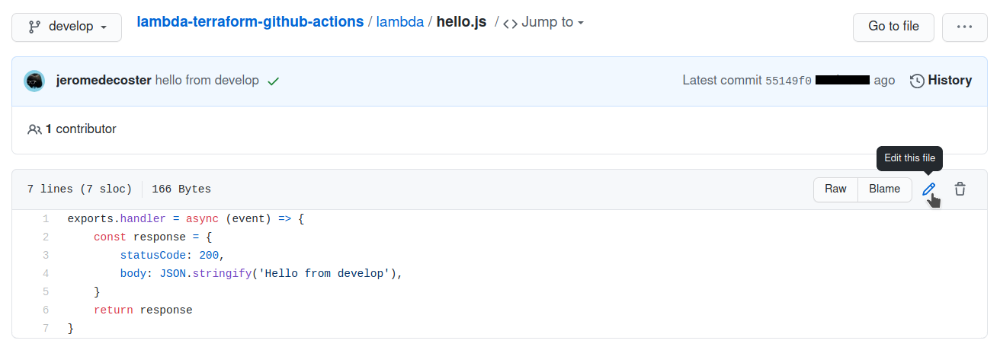
To simulate the first version of our feature-1, we modify our message to Hello with feature-1-v1 :
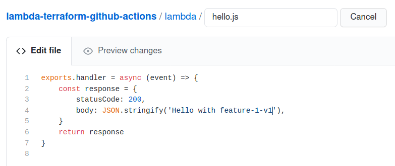
By committing our code, we choose to create a new branch and name it feature-1 :
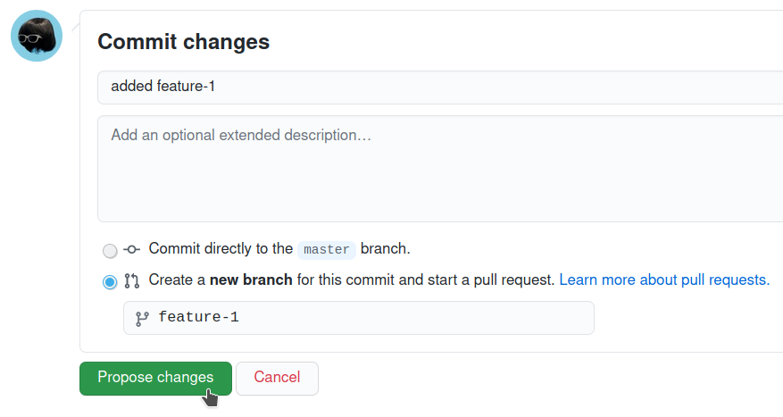
The github web interface offers us to create a Pull Request.
We name it feature-1 and we indicate that this branch should be merged into the develop branch :
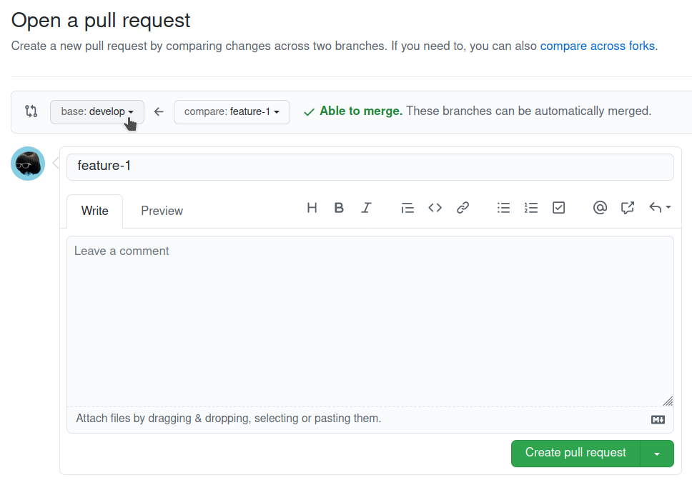
The pull request has been created but we do not merge it right away :
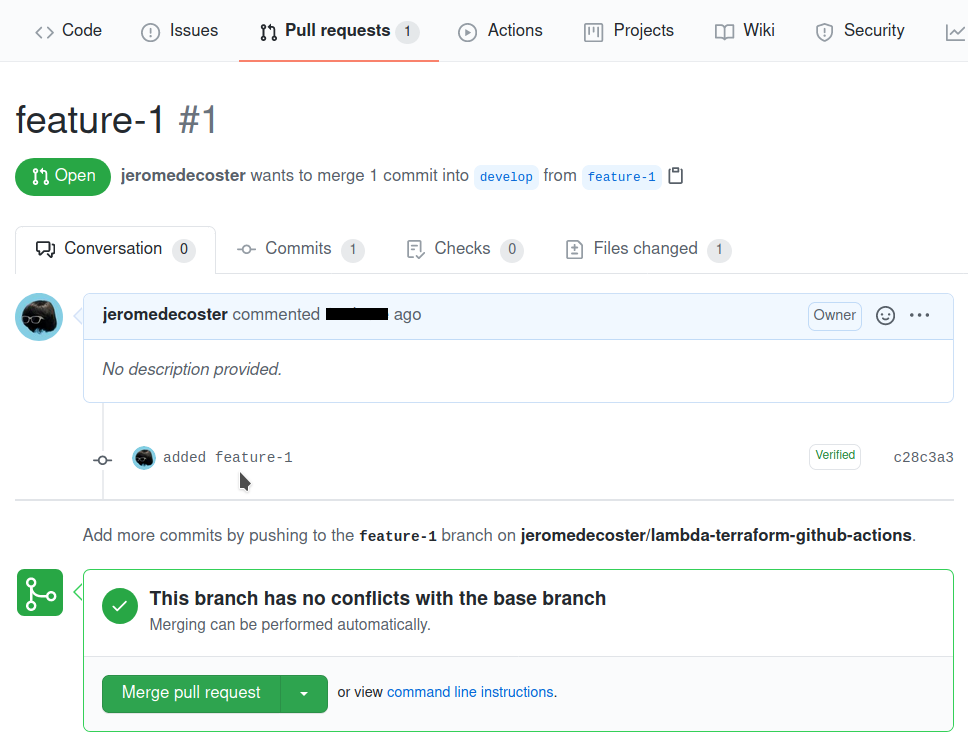
We will first update our Lambda function :
It is important to note that the previous commit on the new feature-1 branch did not trigger our continuous deployment workflow.
This is because the workflow is configured to be triggered only after a push action on the master or the develop branches :
name: cd
on:
push:
branches:
- master
- develop
We are changing the message to Hello with feature-1-v2 :
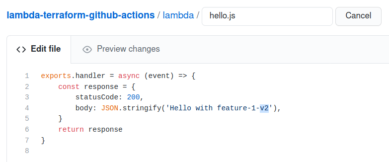
We commit this update in the feature-1 branch :
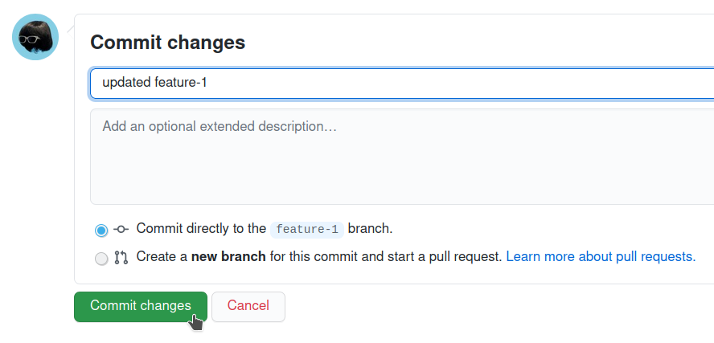
We are now satisfied with all these modifications, we will be able to merge the pull request :
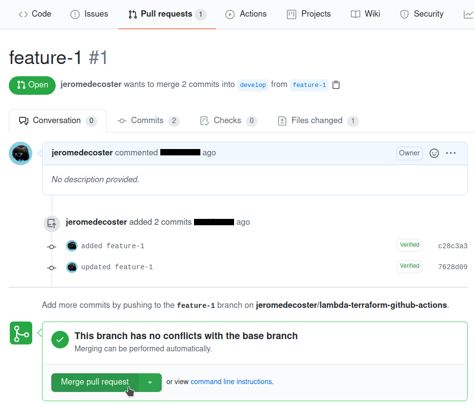
The workflow is started :
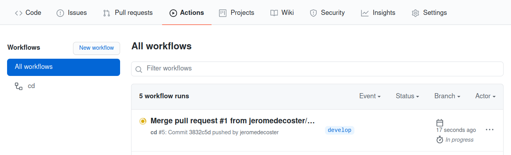
He finishes quickly :
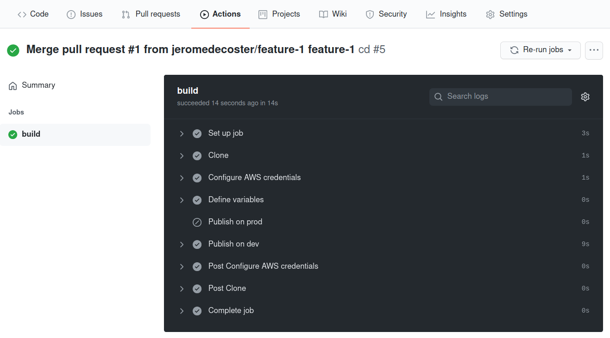
Our new version is quickly accessible from the stage dev :
$ make hello-dev
"Hello with feature-1-v2"
If we are satisfied with this version, we can deploy it in production.
We just need to create a new Pull Request to merge the develop branch to the master branch.
The deployment will be automatic.